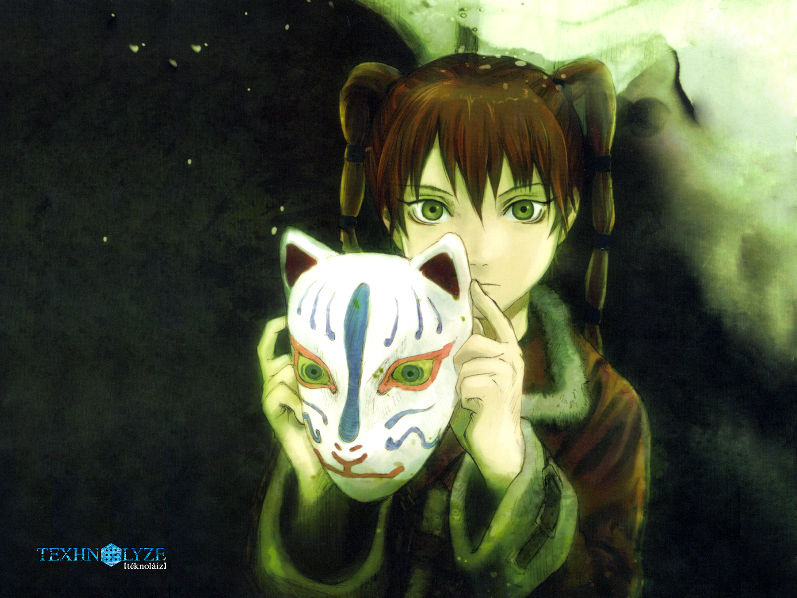
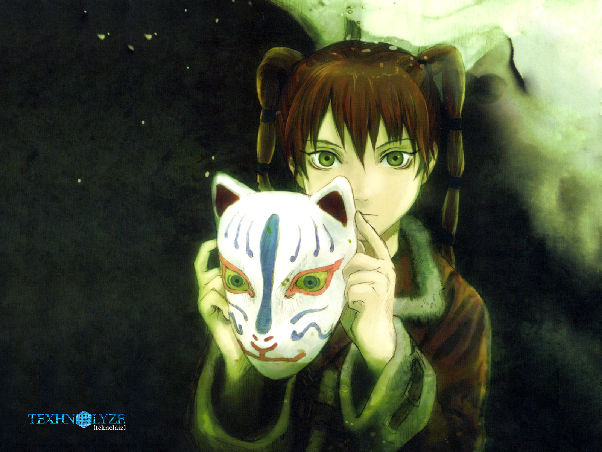
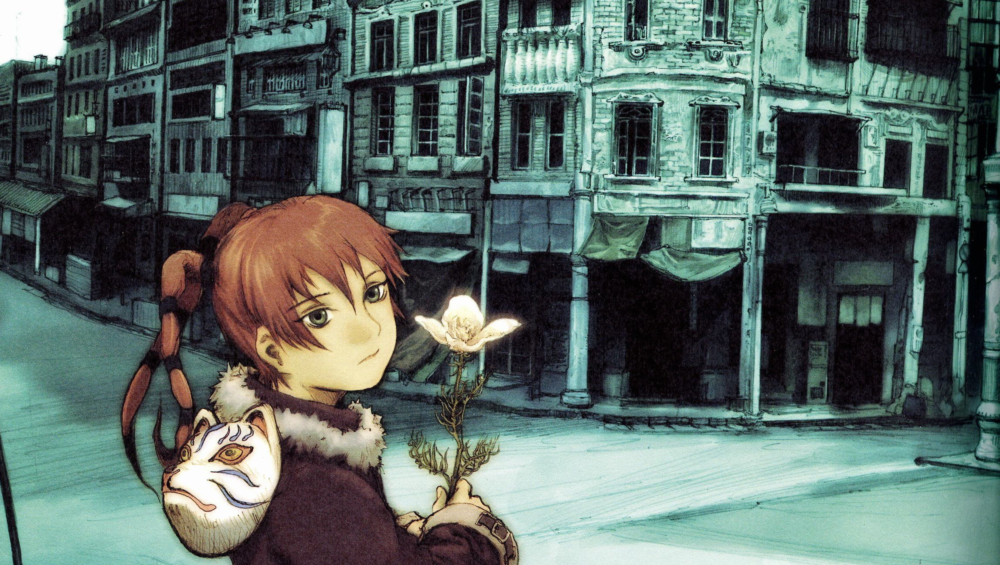
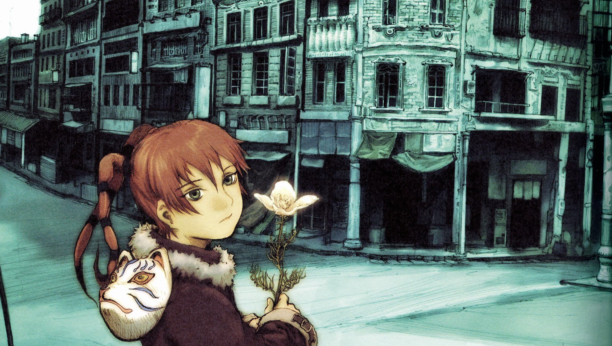
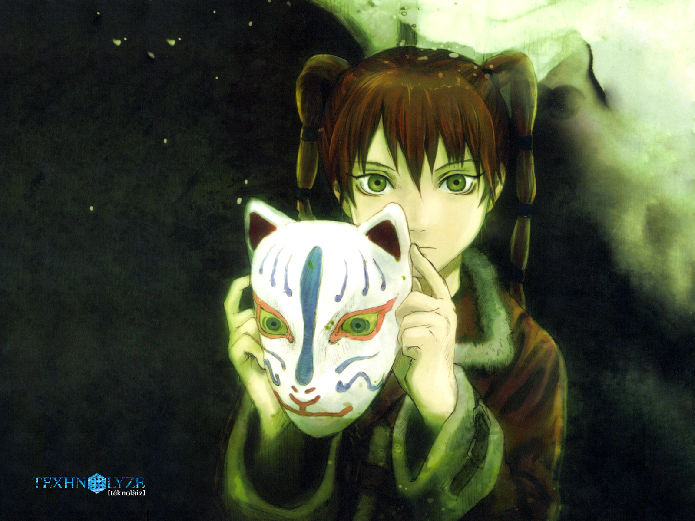
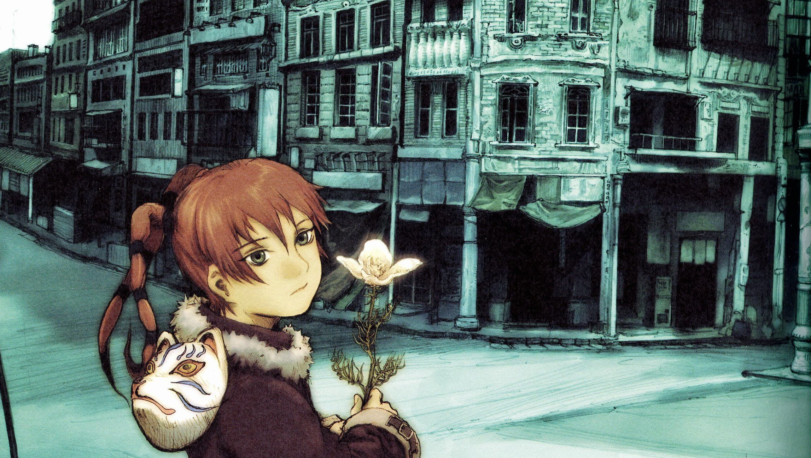

Here is a gallery of the profile pictures and wallpapers I have used in the past or still use. I do not own these images.
profile pictures
 

wallpapers
 

miscellaneous

 no matter where you are, everyone is always connected
no matter where you are, everyone is always connectedHere is a gallery of the profile pictures and wallpapers I have used in the past or still use. I do not own these images.

